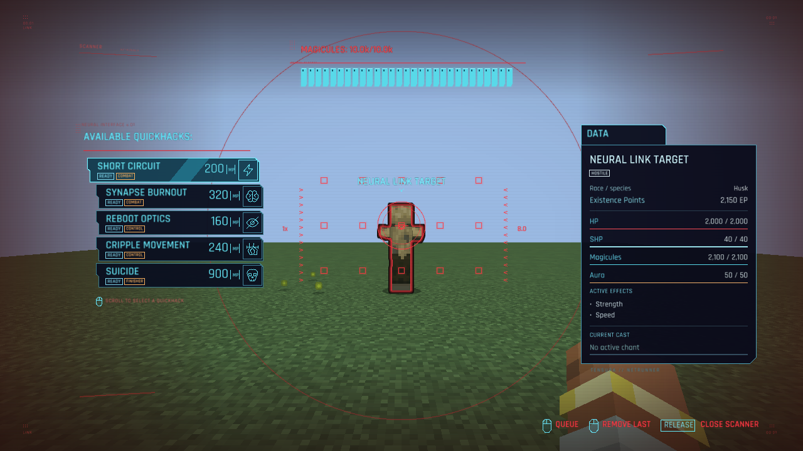
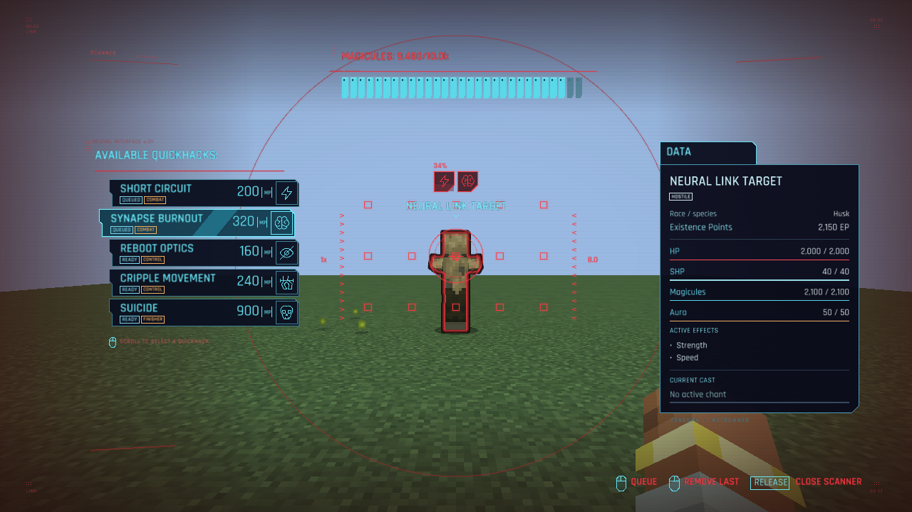
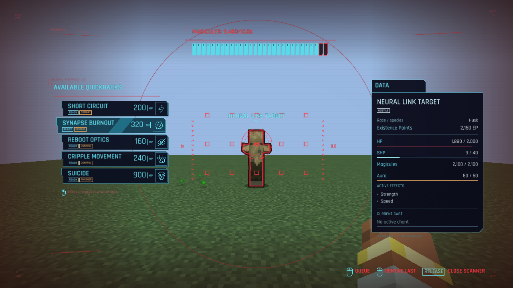

On this page
Quickhack · Active, Hold
Equip the ability in Tensura’s normal skill slots. Hold its key, aim at a living target, then scroll to choose a quickhack and left-click to queue it. Right-click cancels the latest upload. Release the key to close the scanner; uploads continue.
The scanner shows the target’s HP, SHP, magicules, aura, status effects and current chant. Upload icons appear above each target’s head. Three uploads can be queued at once; they execute in order and follow moving targets.
- Link a visible target within 32 blocks; it must remain within 48 blocks during upload.
- Each quickhack has its own cooldown, starting when queued. Magicules are paid immediately; cancellation, death or loss of connection does not refund them.
- Allies, owned pets and protected players are excluded. Normal PvP rules apply.
- Death, dimension changes, logout, losing the skill or skill interference cancel outstanding uploads.
Damage type: None for scanning; see each quickhack below. Opening the scanner costs nothing. The normal status HUD retracts first, followed by the skill panels and hotbar; it returns smoothly when you release. The lens acquires the target first; the resource cells and quickhack panels assemble next. Queue controls become ready after this brief opening animation.




Short Circuit · Upload
Deal 120 Lightning HP damage, increased to 180 against a target currently casting.
Damage type: Lightning (tensura:lightning). Cost: 200 magicules. Upload: 2 seconds. Cooldown: 2 seconds.
Synapse Burnout · Upload
Deal 70 + 140 × missing-magicule fraction SHP damage. Spiritual Attack Resistance halves it; Spiritual Attack Nullification blocks it.
Damage type: Mind Crush, spiritual damage (tensura:mind_crush). Cost: 320 magicules. Upload: 2.5 seconds. Cooldown: 3 seconds.
Reboot Optics · Upload
Disrupt the target’s vision for 5 seconds. Affected mobs lose their target and stop navigating; players suffer a dark, glitching view.
Damage type: None. Cost: 160 magicules. Upload: 1.5 seconds. Cooldown: 4 seconds.
Cripple Movement · Upload
Root the target for 3 seconds, stopping horizontal movement and upward motion. Attack speed is unchanged.
Damage type: None. Cost: 240 magicules. Upload: 2 seconds. Cooldown: 4 seconds.
Suicide · Upload
Force a self-directed strike that deals resistible mental HP damage: 200% maximum HP against ordinary mobs, 45% against players and tagged bosses. It uses the normal damage pipeline; defenses and fatal-hit regeneration can prevent death.
Damage type: Mind Crush (tensura:mind_crush). Cost: 900 magicules. Upload: 5 seconds. Cooldown: 15 seconds.
All numbers are defaults. Server settings and native combat modifiers can change the outcome. Netrunner is excluded from Fettered Human’s default reincarnation pool and from Metis auto-casting.
Display examples
